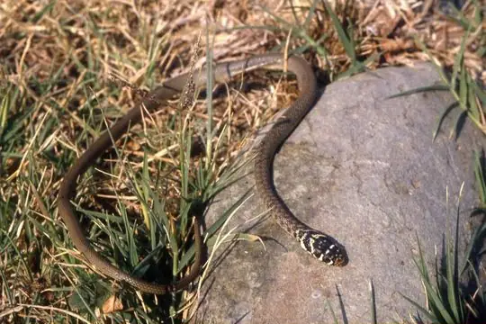
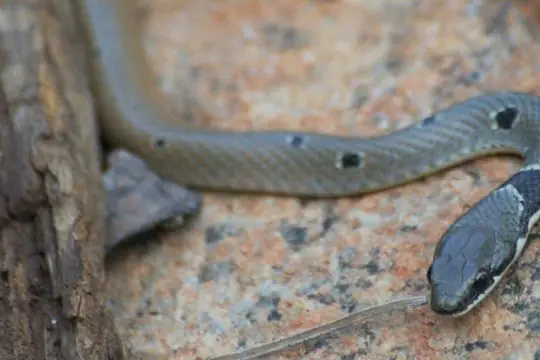

Coluber
The genus Coluber (family Colubridae) has 14 species in SnakeList (none venomous), recorded in 20 countries.
- 14species
- 14non-venomous
- 20countries
About the genus
A genus of the family Colubridae (colubrids).
Species
Showing 14 species

Dark green snakeColuber viridiflavus RacerColuber constrictor
RacerColuber constrictor
Red-headed whip-snakeColuber rubriceps- No photo yetColuber alternans
- Known from fossilsColuber cadurci
- Known from fossilsColuber caspioides
- Known from fossilsColuber dolnicensis
- No photo yetColuber gyarosensis
- No photo yetColuber ibiboboca
- Known from fossilsColuber kormosi
- No photo yetColuber melanepis
- Known from fossilsColuber merkurensis
- Known from fossilsColuber robertmertensi
- No photo yetColuber slevini
No snakes in Coluber match.